Check out my personally-made photo album! Designed for you to learn more about me.
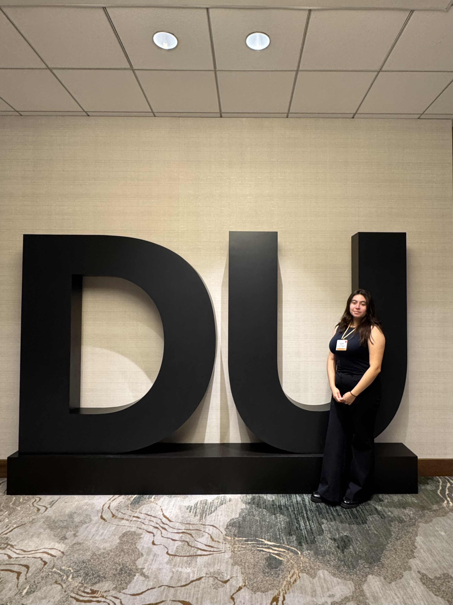
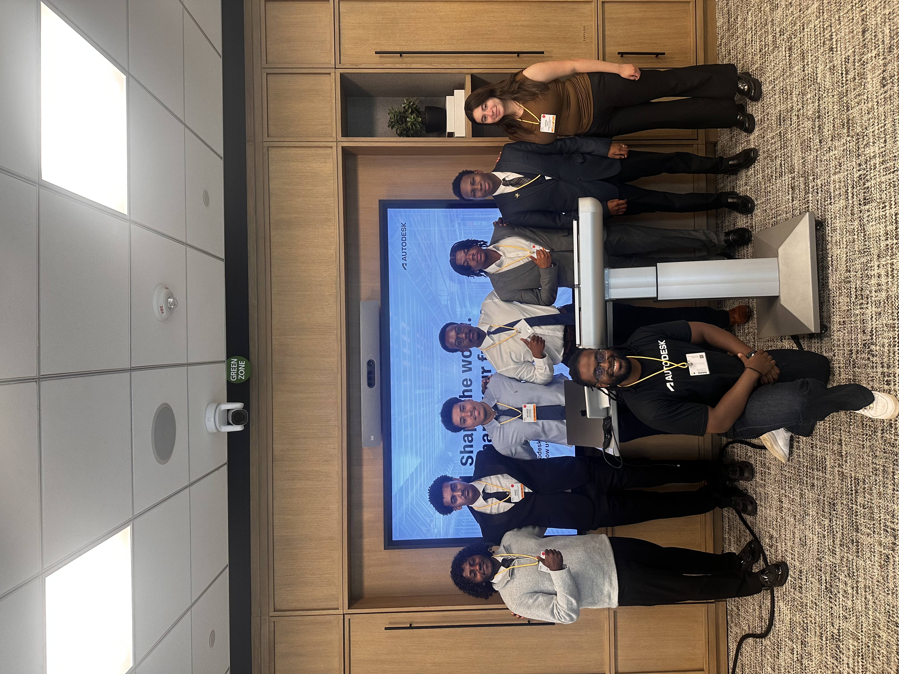
This is me at Deloitte University (located in Texas) for the Management Leadership for Tomorrow Summer Seminar. I had the opportunity to connect with other third-year students from around the country who are STEM and Business majors.
Tasha was one of my past mentors from Inspiring Girls Now in Technology Evolution (IGNITE). IGNITE is a Seattle-based organization that encourages girls and gender-diverse students to explore and pursue STEM fields. I've actually been a part of IGNITE since my freshman year of high school!
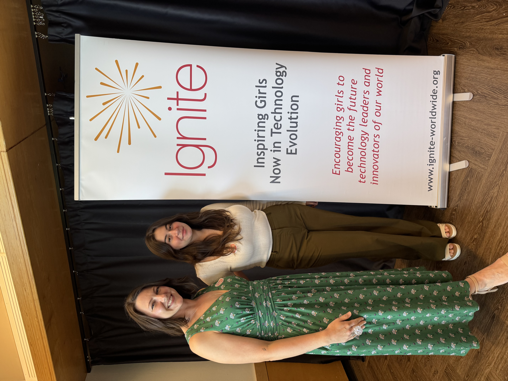
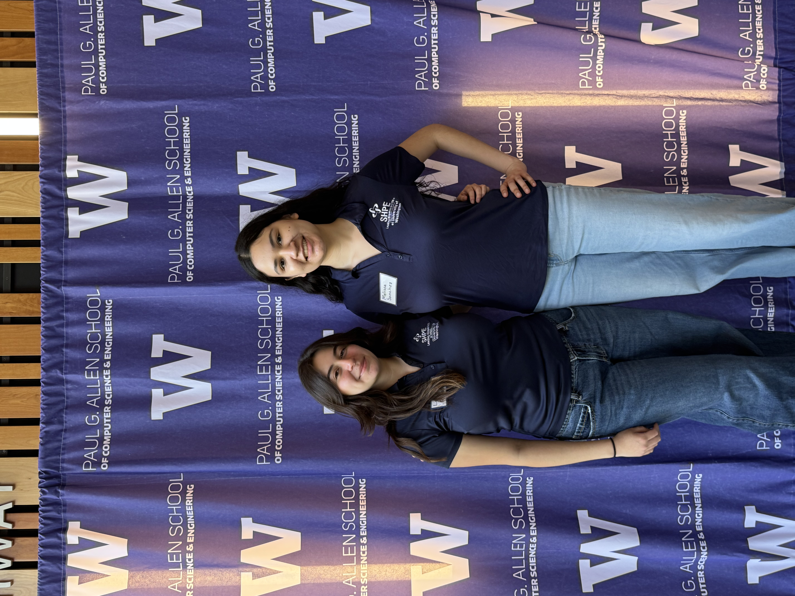
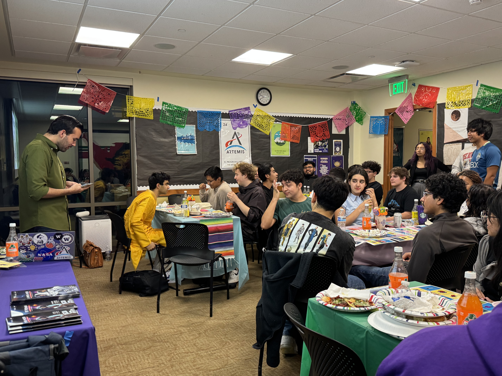
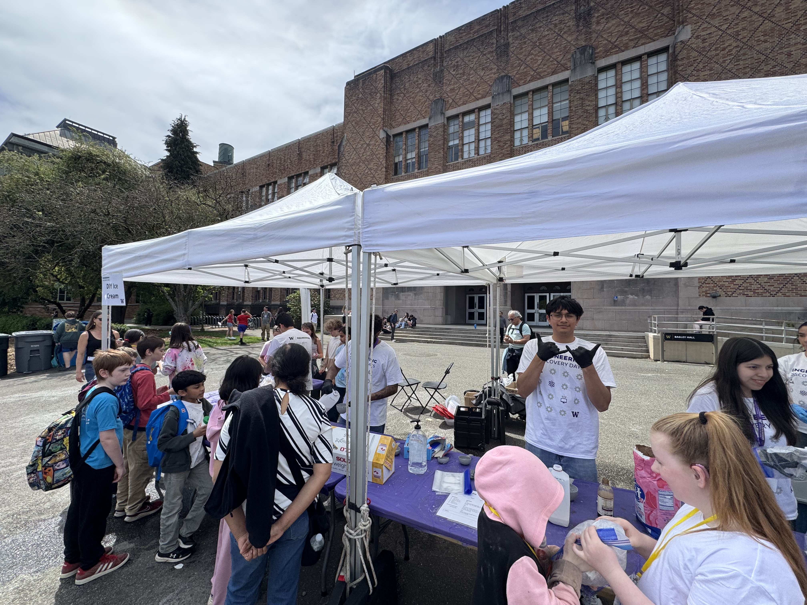
Last year, I was the secretary for the Society of Hispanic Professional Engineers
chapter at the University of Washington. Some of my contributions were:
- Facilitating K-12 Outreach in Eastern Washington
- Collaborating with small businesses like Birrieria Pepe El Toro and Yo Sabo The Game
- Hosting club socials!
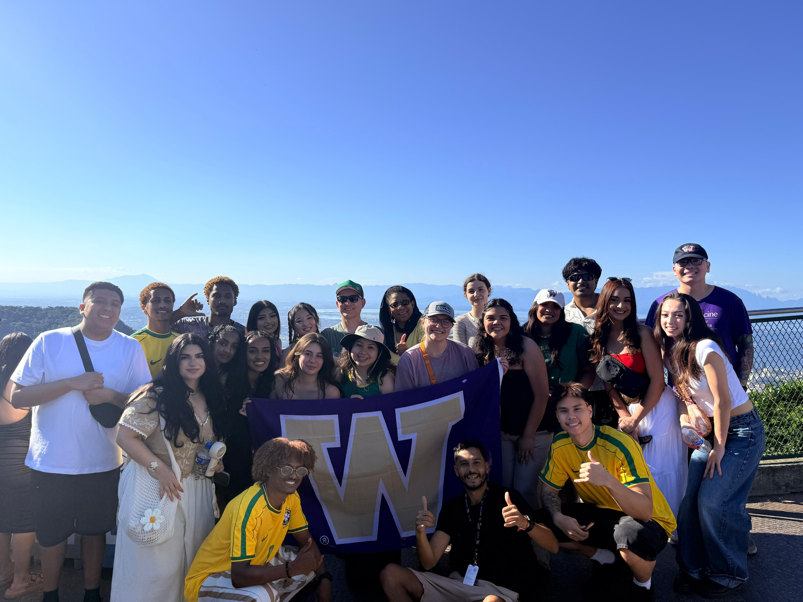
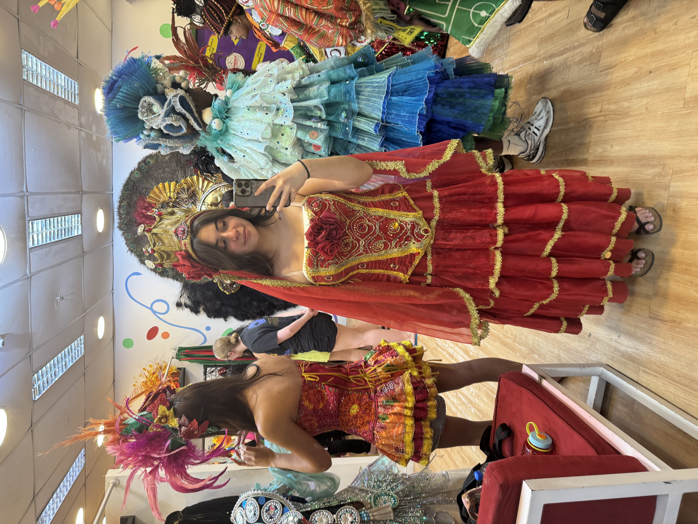
I did a week-long study abroad in Rio de Janeiro, Brazil. I had the opportunity
to:
- Visit Christ the Redeemer
- Visit Ipanema Beach
- Eat natural açai
- Try a Michelin star restaurant
- And much more!
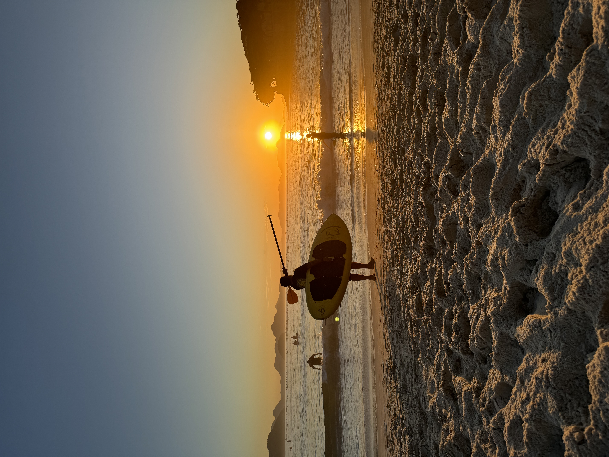
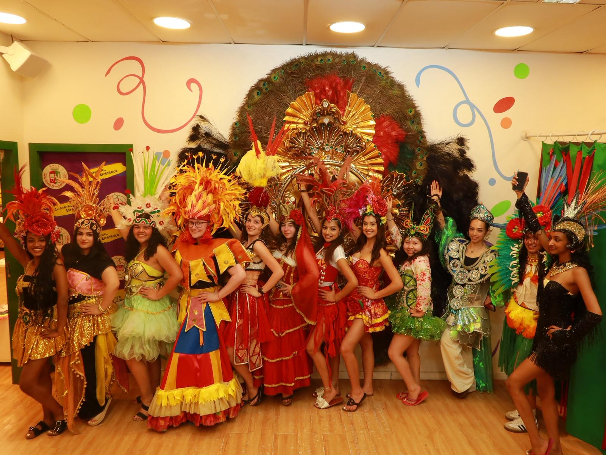
I was an Technology Consulting Analyst at Accenture. Where I took advantage of free snacks and AC. I also had the opportunity to watch the World Cup at Pioneer Square with some of my intern friends! Also pictured is my L2E intern cohort.
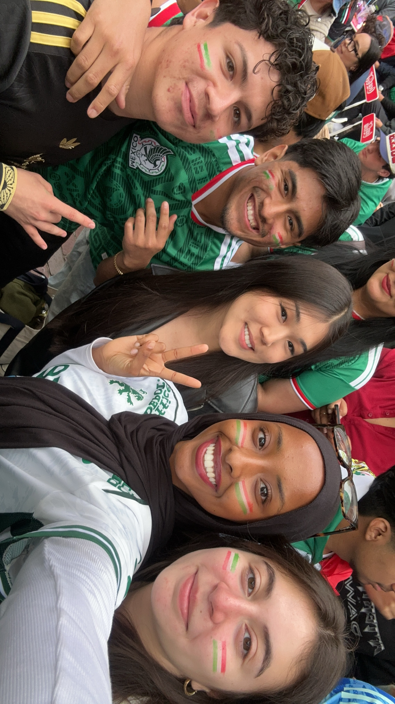
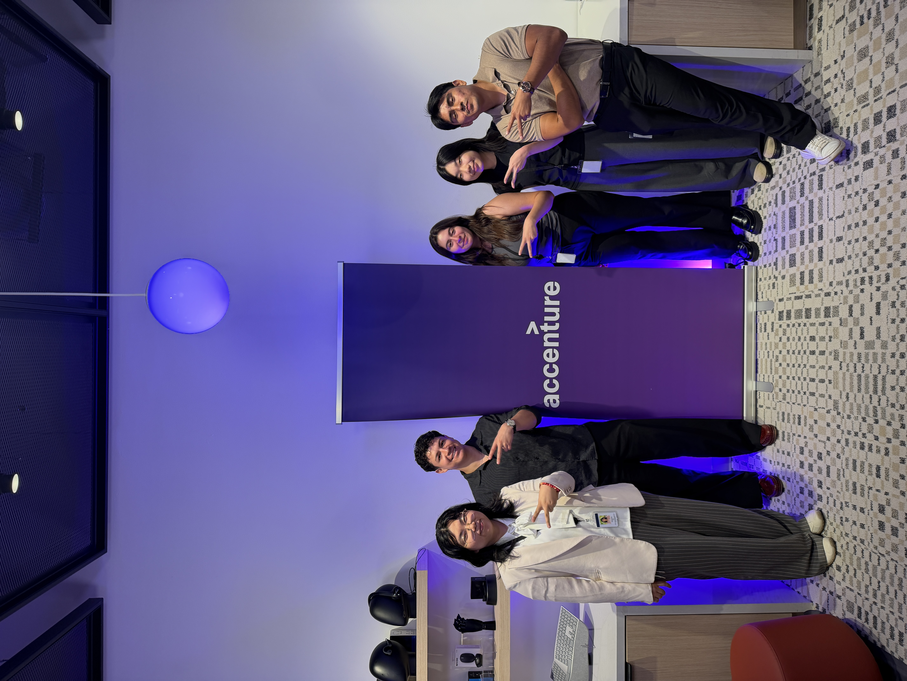

I was an intern at the Academic Counseling Services in the Office of Minority Affairs & Diversity. Where I helped with programs like the College Assistance Migrant Program (CAMP) and the Educational Opportunity Program. Pictured on the left is CAMP Cohort 16.
I am and have been a CSE 197 Teaching Assistant. The course focuses on helping the Allen Scholars and STARS in the introductory Java sequence. The picture is from the The CSE 197 teaching team's quarterly dinners!
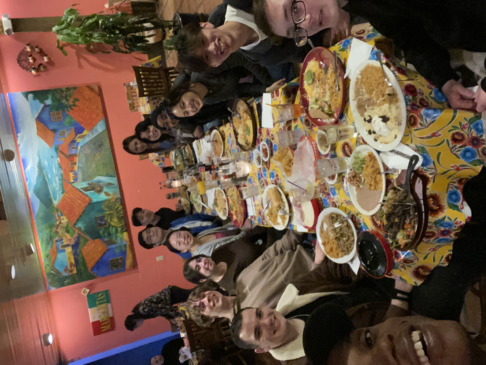